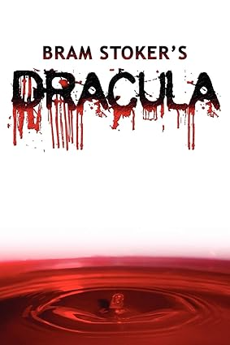

Literatura Gótica
Descubra os clássicos e contemporâneos do gênero gótico
Clássicos Góticos
O Castelo de Otranto
Horace Walpole, 1764

Frankenstein
Mary Shelley, 1818

Drácula
Bram Stoker, 1897
Autores Góticos Contemporâneos
Anne Rice
Conhecida por suas histórias de vampiros e bruxas, incluindo "Entrevista com o Vampiro".
Explorar obrasNeil Gaiman
Autor de "Coraline" e "Sandman", misturando elementos góticos com fantasia moderna.
Ver livrosSilvia Moreno-Garcia
Autora de "Mexican Gothic", trazendo uma nova perspectiva ao gênero gótico.
DescobrirClube do Livro Gótico
Junte-se ao nosso Clube do Livro
Participe de discussões mensais sobre clássicos e novos lançamentos da literatura gótica.